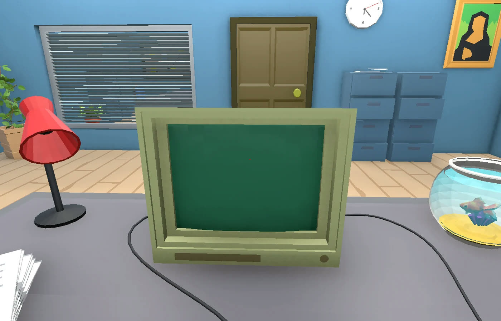
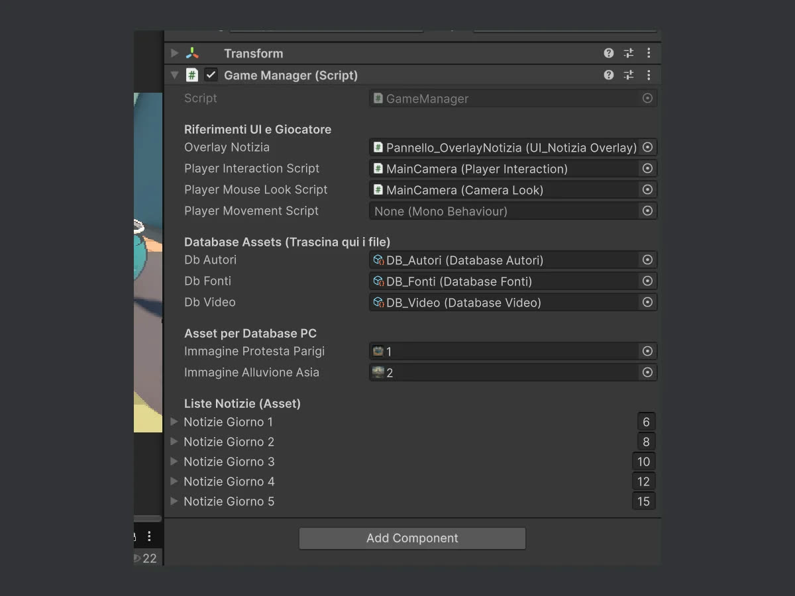
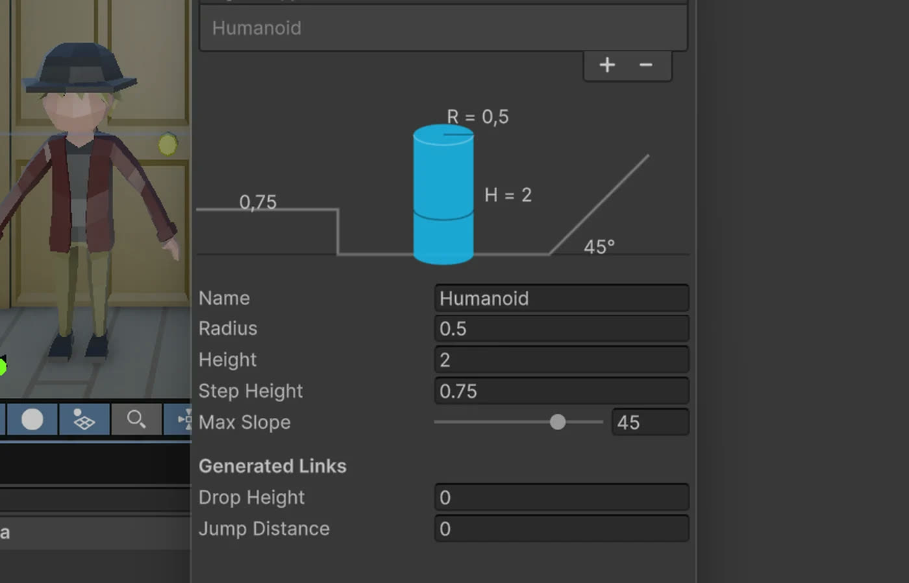

Serious game · team di 2 · 2025–2026
Fact Checker
Un serious game 3D sul riconoscimento delle fake news, sviluppato in due per più esami universitari. Il giocatore è un giornalista: per cinque giornate legge le notizie in arrivo, le verifica al computer e decide con un timbro se pubblicarle o rifiutarle.

- Ruolo
- Sistema delle notizie, gameplay base del giornalista, cutscene, asset 3D
- Team
- 2 persone
- Periodo
- Ottobre 2025–febbraio 2026
- Strumenti
- Unity, C#, Blender, Mixamo
Il gioco
Ogni giornata porta una pila di notizie. Il giocatore le legge, controlla autore, fonte e video al computer e mette un timbro: verde per pubblicare, rosso per rifiutare. Se rifiuta, deve indicare cosa non va: titolo acchiappaclic, fatti inesatti, opinione spacciata per fatto, pubblicità occulta, notizia vecchia, fonte inaffidabile, immagine o video manipolati.
A fine giornata vede il punteggio e può rivedere le notizie su cui ha sbagliato.
Cosa ho fatto io
- Ho progettato e scritto il sistema delle notizie: una struttura dati configurabile dall'editor di Unity, con tutti i campi necessari a costruire una notizia vera o falsa.
- Ho proposto il gameplay e disegnato gran parte dei flussi utente.
- Ho realizzato le cutscene, con animazioni e dialoghi, e il gameplay base del giornalista.
- Ho modellato in Blender alcuni asset low-poly dell'ufficio e animato il collega con Mixamo.
Come funziona il sistema delle notizie
Ogni notizia è un asset: chi scrive i contenuti la crea dal menu di Unity e compila i campi nell'Inspector, senza toccare il codice. Gli asset originali non vengono mai modificati durante la partita.
Il codice
Una notizia come asset
Con [CreateAssetMenu] ogni notizia diventa un file del progetto. La soluzione sta dentro la notizia: se va pubblicata e, se è falsa, quali errori contiene. Gli errori possibili sono un enum, così l'interfaccia dei timbri e il punteggio usano gli stessi valori.
[CreateAssetMenu(fileName = "Notizia_", menuName = "Gioco/Notizia Data")]
public class NotiziaData : ScriptableObject
{
[Header("Contenuto Testuale")]
public string titolo;
[TextArea(3, 5)] public string sottotitolo;
[TextArea(10, 20)] public string corpo;
public string autore;
public string fonte;
public string dataNotizia;
[Header("Contenuti Multimediali")]
public Texture2D immagineAllegata;
public string linkVideo;
[Header("Verifica e Soluzione")]
public bool isPublishable;
public List<ErrorType> erroriPresenti;
}
public enum ErrorType
{
NONE,
CLICKBAIT, // titolo sensazionalistico
INACCURATE_FACT, // fatti inventati o inesatti
BIAS_OPINION, // opinione spacciata per fatto
ADVERTISING, // pubblicità occulta
BAD_DATE, // notizia vecchia riproposta come nuova
BAD_SOURCE, // fonte inaffidabile o inesistente
BAD_IMAGE, // immagine ritoccata o fuori contesto
BAD_VIDEO, // video manipolato o non pertinente
}Dati separati dalle scelte del giocatore
NotiziaRuntime avvolge l'asset e tiene solo lo stato della partita. A fine giornata il punteggio dà +1 per ogni decisione giusta, +1 per ogni errore individuato in una notizia falsa e −1 per ogni decisione sbagliata. Le notizie sbagliate finiscono nella revisione.
public class NotiziaRuntime
{
public NotiziaData data; // l'asset originale, in sola lettura
public PlayerDecision decision; // UNRATED, APPROVED o REJECTED
public List<ErrorType> selectedErrors;
public NotiziaRuntime(NotiziaData asset)
{
data = asset;
decision = PlayerDecision.UNRATED;
selectedErrors = new List<ErrorType>();
}
}
// GameManager, a fine giornata
foreach (NotiziaRuntime notizia in runtimeCodaNotizie)
{
bool approved = (notizia.decision == PlayerDecision.APPROVED);
bool correct = (approved == notizia.data.isPublishable);
if (correct)
{
dayScoreCalc += 1;
correctNewsCount++;
if (!notizia.data.isPublishable)
{
var erroriIndovinati = notizia.selectedErrors.Intersect(notizia.data.erroriPresenti);
dayScoreCalc += erroriIndovinati.Count();
}
}
else
{
dayScoreCalc -= 1;
wrongNewsCount++;
erroriCommessi.Add(notizia.data);
}
}Estratti semplificati: ho tolto le righe di log e accorciato alcuni commenti. Il progetto completo lo mostro volentieri a colloquio.
Galleria



